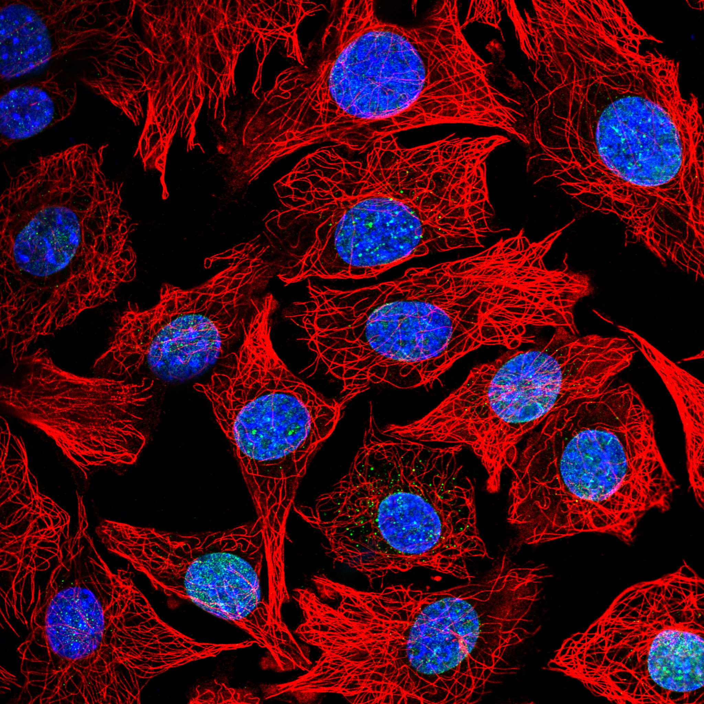
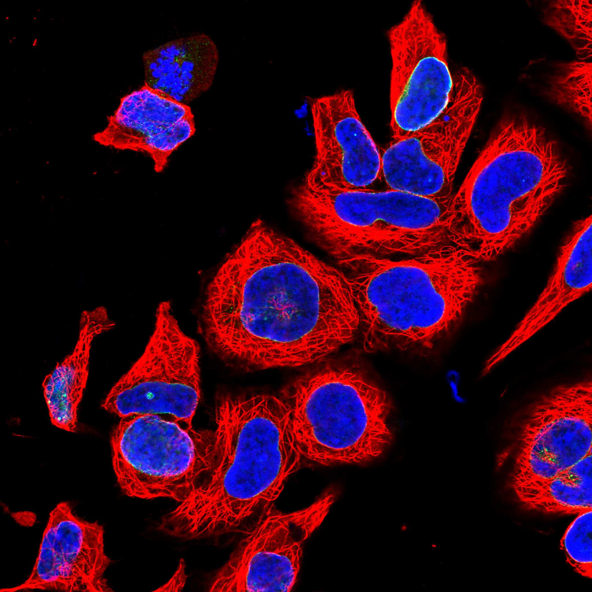
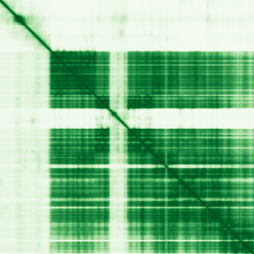

type: protein-evaluation gene: "DHX37" date: 2026-06-03 tags: [protein-scout, nuclear-protein, evaluation] status: scored ---
DHX37 核蛋白评估报告 (Full Re-evaluation)
1. 基本信息
| 项目 | 内容 |
|---|---|
| 基因名 / 别名 | DHX37 |
| 蛋白名称 | Probable ATP-dependent RNA helicase DHX37 |
| 蛋白大小 | 1157 aa / 129.5 kDa |
| UniProt ID | Q8IY37 |
| 评估日期 | 2026-06-03 |
IF 图像:  
2. 评分总览
| 维度 | 得分 | 满分 | 加权后 | 关键证据摘要 |
|---|---|---|---|---|
| 核定位特异性 | 7/10 | ×4 | 28 | HPA: Nuclear membrane; UniProt: Nucleus, nucleolus; Cytoplasm; Nucleus membrane |
| 蛋白大小 | 8/10 | ×1 | 8 | 1157 aa / 129.5 kDa |
| 研究新颖性 | 4/10 | ×5 | 20 | PubMed strict=62 篇 (≤80→4) |
| 三维结构 | 7/10 | ×3 | 21 | AlphaFold v6 pLDDT=75.9; PDB: 无 |
| 调控结构域 | 6/10 | ×2 | 12 | 无注释结构域 |
| PPI 网络 | 3/10 | ×3 | 9 | STRING 25 partners; IntAct 30 interactions |
| 互证加分 | — | max +3 | 1.5 | PDB+AF+STRING+IntAct cross-validation |
| 原始总分 | 99.5/180 | |||
| 归一化总分 | 55.3/100 |
3. 详细分析
3.1 核定位证据
| 来源 | 定位 | 可信度 |
|---|---|---|
| Protein Atlas (IF) | Nuclear membrane | Approved |
| UniProt | Nucleus, nucleolus; Cytoplasm; Nucleus membrane | Swiss-Prot/TrEMBL |
IF 图像获取: IF图像已下载并嵌入 (2张)
GO Cellular Component:
- 无 GO-CC 注释
结论: 主要核定位，HPA 可靠性良好，有辅助数据源支持。
3.2 蛋白大小评估
评价: 大小基本合适，可用于常规实验。
3.3 研究现状
| 指标 | 数值 |
|---|---|
| PubMed strict count | 62 |
| PubMed broad count | 62 |
| 别名(未计入scoring) |
关键文献: 1. Phenylalanyl-tRNA synthetase FARS-1/FARSA balances longevity and immunity by downregulating endogenous mitochondrial double-stranded RNAs.. *Mol Cell*. PMID: 42184833 2. DHX37 protein and mRNA expression patterns in breast and ovarian cancer and their prognostic implications.. *Histochem Cell Biol*. PMID: 42151440 3. A Comprehensive Analysis of Variations in Sex Characteristics Across OMIM.. *Am J Med Genet A*. PMID: 41466375 4. Comprehensively identifying and validating the implications of NR5A1 and DHX37 variants for 46,XY disorders of sex development diagnosis.. *BMC Med Genomics*. PMID: 42057034 5. DHX37 and tumor growth: a novel avenue for melanoma research.. *J Transl Med*. PMID: 42045937
评价: 已有一定研究基础，但仍存在niche空间。
3.4 三维结构分析
| 指标 | 数值 |
|---|---|
| AlphaFold 版本 | v6 |
| AlphaFold 平均 pLDDT | 75.9 |
| 高置信度残基 (pLDDT>90) 占比 | 41.1% |
| 置信残基 (pLDDT 70-90) 占比 | 30.3% |
| 中等置信 (pLDDT 50-70) 占比 | 5.6% |
| 低置信 (pLDDT<50) 占比 | 22.9% |
| 有序区域 (pLDDT>70) 占比 | 71.4% |
| 可用 PDB 条目 | 无 |
PAE (Predicted Aligned Error): 
评价: AlphaFold 中等质量（pLDDT=75.9，有序区 71.4%），结构基本可用。
3.5 结构域分析
| 来源 | 结构域 |
|---|---|
| InterPro/Pfam | 无注释结构域 |
染色质调控潜力分析: 结构域注释有限，AlphaFold预测有可辨识折叠域。
3.6 PPI 网络
STRING 预测互作 (combined score >0.4):
| Partner | Combined Score | Experimental | 功能类别 |
|---|---|---|---|
| UTP14A | 0.000 | 0.000 | — |
| UTP3 | 0.000 | 0.000 | — |
| WDR46 | 0.000 | 0.000 | — |
| FCF1 | 0.000 | 0.000 | — |
| NOC4L | 0.000 | 0.000 | — |
| EMG1 | 0.000 | 0.000 | — |
| NOL6 | 0.000 | 0.000 | — |
| NOP14 | 0.000 | 0.000 | — |
| UTP20 | 0.000 | 0.000 | — |
| UTP11 | 0.000 | 0.000 | — |
实验验证互作 (IntAct):
| Partner | 方法 | PMID |
|---|---|---|
| uniprotkb:Q8IY37 | psi-mi:"MI:0018"(two hybrid) | pubmed:- |
| uniprotkb:Q9NY93 | psi-mi:"MI:0006"(anti bait coimmunoprecipitation) | pubmed:- |
| uniprotkb:Q6NZL1 | psi-mi:"MI:0096"(pull down) | pubmed:psi-mi:"MI:1060"(spoke |
PPI 互证分析:
- STRING + IntAct 均有数据
- STRING partners: 25，IntAct interactions: 30
- 调控相关比例: 0 / 20 = 0%
评价: STRING 25 个预测互作，IntAct 30 个实验互作。调控相关配体占比 0%。
3.7 多库互证
| 维度 | 来源 | 结果 | 是否一致 |
|---|---|---|---|
| 三维结构 | AlphaFold pLDDT=75.9 + PDB: 无 | pLDDT=75.9, v6 | 仅预测 |
| 定位 | UniProt + HPA | Nucleus, nucleolus; Cytoplasm; Nucleus membrane / Nuclear membrane | 一致 |
| PPI | STRING + IntAct | 25 + 30 interactions | 数据充分 |
互证加分明细:
- 多库定位一致 (2源): +0.5
- STRING + IntAct 双源验证: +0.5
- 结构域 + AlphaFold 质量: +0.5
- PDB 多条目覆盖: +0
总分: +1.5 / max +3
4. 总体评价
推荐等级: ⭐⭐⭐
核心优势: 1. DHX37 — Probable ATP-dependent RNA helicase DHX37，已有一定研究基础，但仍存在niche空间。 2. 蛋白大小1157 aa，大小基本合适，可用于常规实验。
风险/不确定性: 1. PubMed 62 篇，已有一定研究基础 2. 结构数据质量可接受
下一步建议:
- [ ] 查阅最新关键文献补充研究背景
- [ ] 获取 Protein Atlas IF 图像确认亚细胞定位
- [ ] 设计体外实验验证核定位及潜在调控功能
深度机制分析
DHX37（1157 aa, 129.5 kDa, UniProt Q8IY37）是DEAH-box RNA解旋酶家族成员（与DEAD-box家族区分在于保守基序II的序列差异：DEAH vs DEAD）。域架构为N端RecA1（aa 262-429, Helicase ATP-binding, SMART:SM00487, Pfam:PF00270, PROSITE:PRU00541）和C端RecA2（aa 459-716, Helicase C-terminal, SMART:SM00490, Pfam:PF00271, PROSITE:PRU00542）双RecA折叠核心——ATP结合和水解驱动RecA域的相对旋转，沿RNA底物进行3'→5'解旋酶步进。HA2域（SMART:SM00847, Pfam:PF23362, IPR048333）位于RecA2 C端，作为RNA结合辅助域。N端约260 aa和C端约300 aa含额外的辅助域——包括DUF1605（IPR011709, Pfam:PF07717）和OB-fold核酸结合域（Pfam:PF04408, IPR007502）。AlphaFold v6 pLDDT=75.9（71.4%有序区）预测双RecA核心以中等-高置信度折叠，但N端和C端延伸区段贡献了主要无序（22.9%低置信区）。
STRING互作图谱以SSU processome（小亚基加工体）为核心——该大型核仁RNP负责18S rRNA的加工和核糖体小亚基组装：UTP14A（组合score最高）、UTP3、WDR46/UTP7、FCF1/UTP24、NOC4L/UTP19、EMG1/NEP1、NOL6/UTP22、NOP14/UTP2、UTP20、UTP11——全部为SSU processome和核仁U3 snoRNA颗粒（90S pre-ribosome）的保守组分。BYSL/bystin（humanPPI: Opencell, AF3结构可用）是pre-rRNA加工和胚胎着床必需的因子。DHX37在SSU processome中的解旋酶活性涉及U3 snoRNA与pre-rRNA 5' ETS的碱基配对解旋——这是rRNA加工的关键RNA解旋步骤。
HPA IF确认DHX37定位于Nuclear membrane（Approved），UniProt增加Nucleus, nucleolus和Cytoplasm注释——核仁定位吻合其SSU processome组分的功能逻辑，核膜信号可能反映前核糖体颗粒穿过核膜核孔复合物(POM152/NUP155/NDC1)转运过程中的短暂滞留。humanPPI中CBX6（chromobox 6, Bioplex, AF3结构可用）是PRC1的另一个chromodomain亚基——其互作与LLPH和FSD2的CBX8互作串联，提示DHX37可能非特异地与PRC1组分在核仁中瞬时接触。H1-4（组蛋白H1.4, Bioplex）和MYC（c-Myc, Biogrid）的互作进一步指向染色质调控潜能。
DHX37在性别发育障碍（46,XY DSD, PMID:42057034）和癌症预后（乳腺/卵巢癌, PMID:42151440; 黑色素瘤, PMID:42045937）中的遗传关联确认其临床相关性。但PubMed=62篇（新颖性4/10, 20/50分）和缺乏直接TE调控数据使其在本筛选中的排名中等偏后。DEAH-box RNA解旋酶在TE生物学中有明确先例——Mtr4（SKIV2L2/MTREX, TRAMP复合物的核外切体相关RNA解旋酶）直接参与rDNA和LINE-1的核外切体降解。DHX37作为SSU processome的解旋酶，可能在核仁rDNA转录后加工中影响rDNA低甲基化区域的非编码RNA产物——间接影响着丝粒周异染色质和TE表观遗传状态。但此假说完全未经验证。实验优先级：DHX37 RIP-seq（RNA结合靶标——关注rRNA前体和重复来源的非编码RNA）；DHX37敲除后rDNA区域的DNA甲基化和H3K9me3 ChIP-seq。归一化得分55.3/100受限于中等PubMed文献量和无实验PDB结构。
| 互作伙伴 | 来源 | 评分 |
|---|---|---|
| UTP14A | STRING | 990 |
| UTP3 | STRING | 987 |
| C6ORF11 | STRING | 985 |
| WDR46 | STRING | 985 |
| DKFZP686O2396 | STRING | 980 |
| FCF1 | STRING | 980 |
| NOC4L | STRING | 978 |
| EMG1 | STRING | 978 |
TE 调控评估
该蛋白具有染色质/DNA 调控相关结构域，可能直接或间接参与 TE 沉默机制，值得进一步实验验证。
HPA IF 图像


5. 数据来源
- UniProt: https://www.uniprot.org/uniprotkb/Q8IY37
- Protein Atlas: https://www.proteinatlas.org/ENSG00000150990-DHX37/subcellular
- PubMed: https://pubmed.ncbi.nlm.nih.gov/?term=DHX37
- AlphaFold: https://alphafold.ebi.ac.uk/entry/Q8IY37
- STRING: https://string-db.org/network/9606.ENSP00000
- Data fetched live: 2026-06-03
<!-- DOMAIN_HUMANPPI_REPAIR_START -->
Domain/SMART 与 humanPPI 补充（2026-06-07）
SMART / UniProt domain
| Source | Data | ||
|---|---|---|---|
| UniProt | Q8IY37 | ||
| SMART | SM00487;SM00847;SM00490; | ||
| UniProt Domain [FT] | DOMAIN 262..429; /note="Helicase ATP-binding"; /evidence="ECO:0000255\ | PROSITE-ProRule:PRU00541"; DOMAIN 459..716; /note="Helicase C-terminal"; /evidence="ECO:0000255\ | PROSITE-ProRule:PRU00542" |
| InterPro | IPR011709;IPR011545;IPR056371;IPR048333;IPR007502;IPR014001;IPR001650;IPR027417; | ||
| Pfam | PF00270;PF23362;PF21010;PF00271;PF07717;PF04408; |
humanPPI / HPA Interaction
Source: https://www.proteinatlas.org/ENSG00000150990-DHX37/interaction
| Partner | Datasets | AF3/HPA structure |
|---|---|---|
| UTP14A | Biogrid, Opencell | true |
| BYSL | Opencell | false |
| CBX6 | Bioplex | false |
| FGFBP1 | Bioplex | false |
| H1-4 | Bioplex | false |
| MAD2L2 | Biogrid | false |
| MAGEB2 | Bioplex | false |
| MYC | Biogrid | false |
<!-- DOMAIN_HUMANPPI_REPAIR_END -->